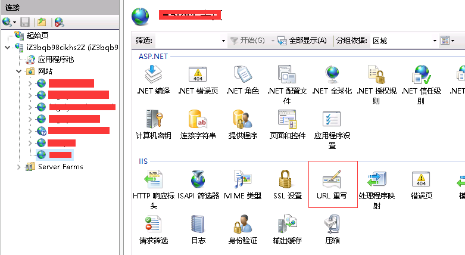
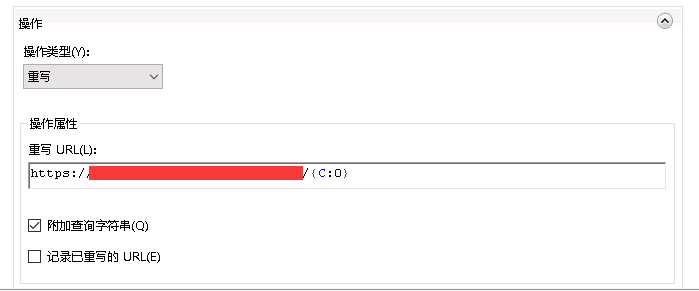

以前我使用过Apache或Nginx实现反向代理，但是目前后端使用的是.Net语言，服务器操作系统是Windows Server，并且后端应用程序就部署在IIS上，因此不打算再安装Nginx，改为使用IIS。
在操作过程中，遇到各种问题也耽误了不少时间，现在将一些操作流程记录下来，以备再用。
项目简介
项目采用前后端分离方式开发，两个代码仓库，并部署为两个应用。后端接口地址全部以/api打头，方便简化转发规则。现在就需要在前端应用中将/api打头的请求转至后端应用。
IIS默认不支持反向代理，需要额外安装插件
很难想象IIS(Internet Infomation Service)竟然不默认支持反向代理，需要安装官方提供的两个插件。
安装插件：
- Application Request Routing
- URL Rewrite
安装完成之后重新启动一下IIS.
启用反向代理功能
- 双击
IIS根目录，双击Application Request Routing Cache，双击右侧的Server Proxy Settings。

- 勾选
Enable proxy
添加入站规则
- 点击前端应用，双击
URL Rewrite->Add Rules(新建规则) ->Blank rule(空白规则)
 填写入站规则信息

填写转发条件

填写操作部分
点击右侧应用
最后
反向代理的配置相比Nginx等复杂太多了，还需要额外理解IIS自己定义的一些概念，比如入站规则等。相信大部分刚毕业的同学跟我一样，一度特别喜欢有操作界面的软件，随着对系统掌握程度的增加，这个想法会慢慢的逆转。